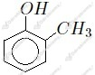
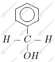
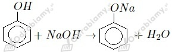
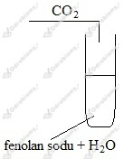
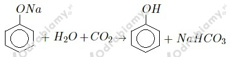

Wzory fenoli to a, b, c, e .
Nazwy systematyczne:
a) 2-metylobenzenol
b) 2,4,6-trinitrobenzenol
c) benzenol
e) 3-bromobenzeno-1,2-diol
Nazwy zwyczajowe:
a) o-krezol
b) kwas pikrynowy
c) fenol
e) 3-bromopirokatechina
wyjaśnienie: Fenole mają grupę -OH przyłączoną bezpośrednio do pierścienia aromatycznego. Z tego względu podpunkt d nie jest fenolem i nie umieszczono go w rozwiązaniu.
Wzory strukturalne:
- metylofenol 
- fenylometanol 
Sposób rozróżnienia:
W celu rozróżnienia tych związków należy przeprowadzić reakcję charakterystyczną fenoli, czyli reakcję z chlorkiem żelaza(III).
-reakcja fenolu z wodorotlenkiem sodu:

-reakcja etanolu z wodorotlenkiem sodu:
Silniejsze właściwości kwasowe mają fenole.
Schemat doświadczenia:

Obserwacje: Po wprowadzeniu CO2 do klarownego roztworu fenolanu sodu, roztwór mętnieje i tworzy się zawiesina.
Wnioski: Pojawienie się zawiesiny świadczy o obecności fenolu w roztworze. Kwas węglowy (w postaci wody i CO2) wypiera fenol z jego soli. Fenol jest zatem kwasem słabszym od kwasu węglowego.
Równanie reakcji:

Równanie reakcji:
Z równania reakcji widzimy, że fenol i wodorotlenek sodu reagują w stosunku równomolowym. Zaczynamy od obliczenia ilości moli NaOH w jego roztworze:
Potrzeba zatem 0,4 mola fenolu. Liczymy masę tej ilości fenolu. Jego masa molowa to 94 g/mol.
Odpowiedź: Do reakcji potrzeba 0,4 mola fenolu o łącznej masie 37,6 g.